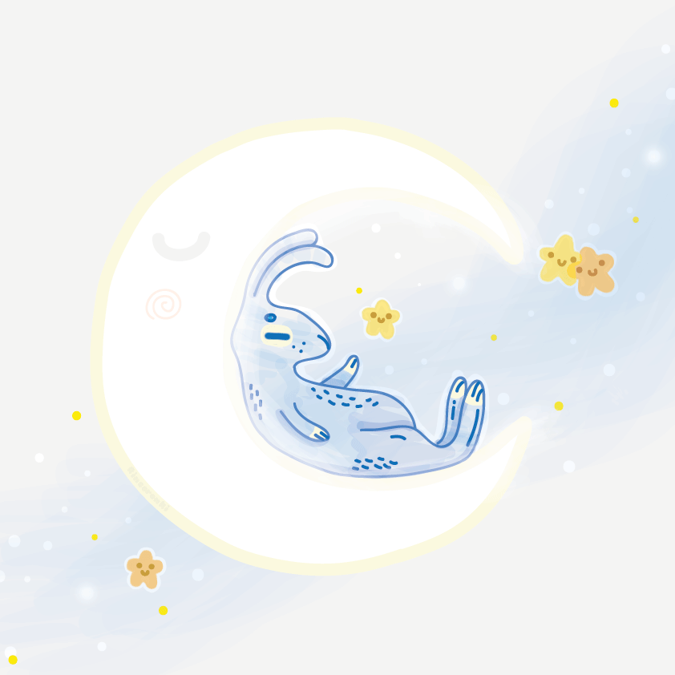

Uma Moon child é uma alma única e curiosa que muitas vezes está atordoada, sua mente está sempre fora deste mundo. Eles vivem em sua fantasia e se recusam a voltar para uma dura realidade. Uma criança lunar nem sempre significa que nasceu sob o signo do zodíaco de Câncer, mas foi simplesmente atraída pela lua de uma forma que não pode ser explicada. De algum jeito eles percentem na lua, à lua.
"Sua mente está sempre vagando, ela é definitivamente uma Moon child!"
"Ele está sempre olhando para a lua, talvez ele seja uma Moon child."